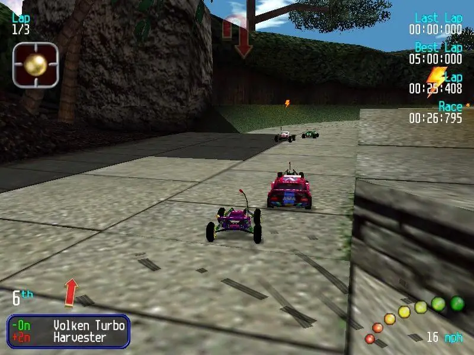
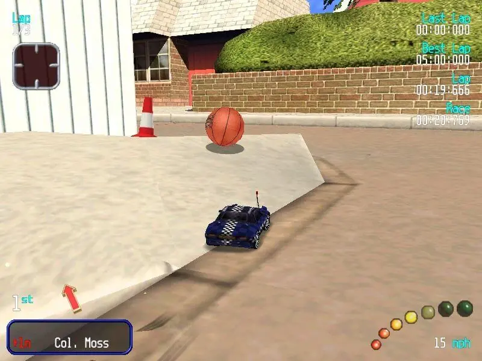
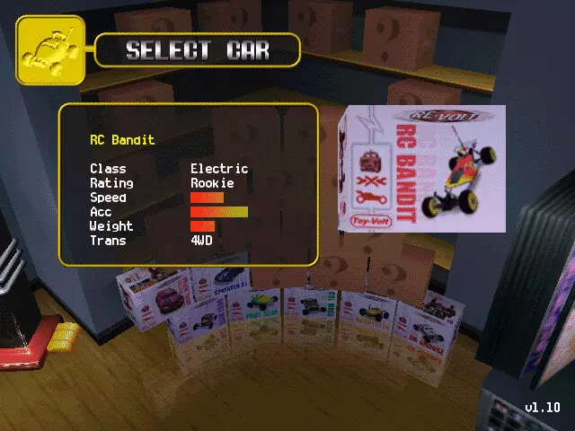

Re-Volt



Details
My notes
I think it is Re-Volt.
Likely match for another remembered remote-control car game. This has not yet been confirmed from the pictures. It remains a separate entry from Stunt GP and the unidentified egg-shaped car game.
About the game
- Original release
- 1999
- Developer
- Acclaim Studios London
- Publisher
- Acclaim Entertainment
- Type
- Radio-controlled car racing
- Remembered platform
- PC
Recognition clues
The original game races miniature cars around everyday spaces, making normal objects feel enormous. Races include power-ups, and additional cars and tracks unlock through tournament progress. These are details about the game, not additional personal recollections.